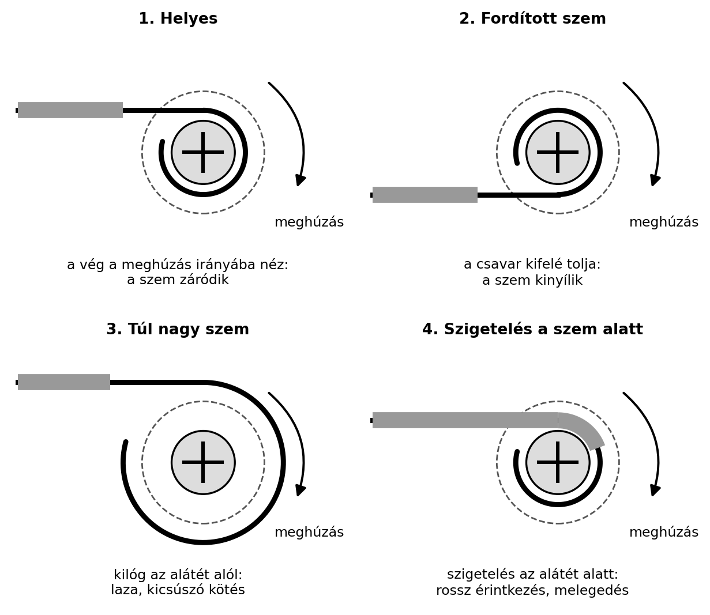

Egy elosztószekrényben a sorkapocs megbízhatósága nem a csavar meghúzásánál kezdődik, hanem már a munkapadon. Ha a hajlékony vezető végét rosszul készíted elő – kihagysz néhány rézszálat, vagy laza marad a krimp –, akkor a csatlakozás átmeneti ellenállása megnő. Az eredmény melegedés, idővel kilazuló, esetleg besült kötés, ami hibaforrás lehet a teljes berendezésben. Ebben az alfejezetben a vezetékmegmunkálás kézműves alapjait tanulod meg: a munkahely előkészítését, a vezeték hosszra vágását, a blankolást, az érvéghüvely és kábelsaru kiválasztását, krimpelését és ellenőrzését. Ez az a tudás, amelyet a későbbi kötéstechnikai és sorkapcsos gyakorlatok során minden alkalommal alkalmazni fogsz.
Képzelj el egy munkapadot, amelyen három, azonos keresztmetszetű, hajlékony vezetővég fekszik. Az első előkészített vég mintaszerű: a szigetelés simán, minden sérülés nélkül el van távolítva, a sodrott ér szálai párhuzamosak, és az érvéghüvely szorosan illeszkedik. A másodiknál a blankolási él megcsípte a rézszálakat; a harmadiknál pedig több vékony szál kihajlik az érvéghüvely gallérja alól. A későbbi sorkapocsba fogásnál az első kötés tartós lesz, a másodiknál csökkenhet a vezető keresztmetszete, a harmadiknál pedig a kihagyott szálak rövidzárlatot vagy bizonytalan érintkezést okozhatnak. A három vezetővéget – és egy negyedik gyakori hibát, a túl rövid blankolást – az alábbi oldalnézeti metszet hasonlítja össze. Helyes állapotban a blankolt szakasz a fémcső hosszával egyezik, a szálak a cső végéig érnek, a szigetelés a műanyag gallérba ér, és a krimp a fémcsövön van. Túl rövid blankolásnál a cső vége üres marad; megcsípett szálnál csökken a vezető keresztmetszete; a gallér alól kimaradt szál pedig zárlatot vagy érintésveszélyt okozhat.
Az ábra szemléltető, nem méretarányos; a fémcső 12 mm-es hossza csak példa, a valós értéket a hüvely gyártói adata adja. A HTML-kiadásban az ábra lépésenként lejátszható (blankolás, szálrendezés, hüvely felhúzása, krimpelés, húzópróba), és minden lépésnél a helyes és egy hibás változat látszik.
Teszteld magad: melyik kártyán milyen hiba látszik, és mi lesz a következménye? Az alábbi nyolc kártya érvéghüvelyt és kábelsarut mutat; van köztük mintaszerű és hibás is. Minden kártyához írd fel az ítéletedet (helyes / túl rövid blankolás / kihagyott szál / krimp a szigetelésen / rossz hüvelyméret / sérült ér / deformált saru) és a várható következményt, csak utána nézd meg a megoldókulcsot.
Megoldókulcs: A – sérült ér (bevágott, eltört szálak: csökkent keresztmetszet, helyi melegedés, rezgésnél törés); B – helyes érvéghüvely; C – krimp a szigetelésen (a gallért nyomták össze, a fémcső laza: kicsúszás, melegedés); D – helyes kábelsaru zsugorcsővel; E – túl rövid blankolás (üres csővég: nagy átmeneti ellenállás, kicsúszás); F – deformált saru (hajlított szem, repedés: melegedés, törés); G – rossz (túl nagy) hüvelyméret, laza krimp (melegedés, kicsúszás); H – kihagyott szál (zárlat a szomszédos kapoccsal, érintésveszély).
A HTML-kiadásban a kártyák véletlen sorrendben jönnek, a választásod után indoklást és következményt kapsz, a végén pedig pontszámot; az „Új sorrend” gombbal újrakezdheted.
A vezetékmegmunkálás akkor lesz gyors és biztonságos, ha a munkahely rendezett, a szerszámok a kezedhez esnek, és a munkadarab stabilan rögzíthető. A munkapad legyen tiszta, száraz, jól megvilágított, és legyen rajta annyi hely, hogy a vezeték ne csavarodjon vissza a vágóeszköz alá. A szerszámok közül a leggyakrabban használtakat – blankoló fogó, krimpelő fogó, oldalcsípő fogó, kés, hosszmérő, esetleg huzallehúzó – helyezd a domináns kezedhez közel, de úgy, hogy a vágóél ne sérthessen meg semmit.
Az alábbi felülnézeti rajz egy jól berendezett munkapadot mutat. Középen a szigetelő, vágásálló alátét (1) és rajta a feszültségmentes munkadarab (2) van, fölötte árnyékmentes megvilágítás (3). A domináns (itt jobb) kéz felől sorakoznak a szigetelt csavarhúzók (4), a blankoló (5), a krimpelő (6) és az oldalcsípő fogó (7), a túloldalon az érvéghüvely-kazetta (8) és a mérőszalag (9). A hulladékot fajtánként gyűjtöd (10), a betáplálás lekapcsolva és lezárva marad (11), a tartó kéz pedig sosem kerül a vágóél útjába (12).
Figyeld meg, hogy a vágószerszámok éle a pad belseje felé néz, és semmi sincs a munkadarab és a kezed között. A HTML-kiadásban a részekre mutatva kiemelődik az adott elem, és megjelenik, mire kell figyelned vele kapcsolatban.
Biztonsági korlát. A feladat tanműhelyi (törpefeszültségű) környezetre vagy jogosult oktató felügyeletére vonatkozik; hálózati feszültségen önállóan ne végezd.
Szabály. Minden szerelési, bekötési, mérési vagy hibakeresési munka előtt a feszültségmentesítés öt biztonsági szabályát kell alkalmazni: 1. lekapcsolás, 2. visszakapcsolás elleni biztosítás, 3. feszültségmentesség ellenőrzése, 4. földelés és rövidre zárás, 5. a szomszédos, feszültség alatti részek lefedése.
Törpefeszültségű tanműhelyi gyakorlaton a 4. és 5. lépés gyakran nem értelmezhető, mert nincs veszélyes szomszédos hálózati feszültség, de az első három lépés akkor is kötelező: győződj meg arról, hogy a munkadarab feszültségmentes, és a visszakapcsolást fizikailag akadályozd meg, illetve jelezd a munkaterületet.
Megjegyzés. A vágó- és krimpelő szerszámok vágóéle és nyomófeje kézsérülést okozhat, ezért használat közben a másik kéz soha ne legyen a szerszám útjában. A szigetelt szerszámok szigetelése a hálózati feszültség ellen véd, de nem ad felhatalmazást feszültség alatti munkára; sérült szigetelésű szerszámot nem szabad használni.
A vezeték hosszra vágásának alapelve: a tervezett bekötési hosszhoz adj tartalékot, de ne hagyj feleslegesen hosszú, kuszán tekergő maradékot. Általánosan elfogadott, hogy a munkadarab végén a blankolandó és bekötendő részhez képest nagyjából 50–100 mm tartalék elegendő, ha a kötést később esetleg újra kell készíteni (ellenőrizendő: a konkrét berendezés gyártói előírása). Ha a vezeték egy elosztószekrényben fut, a tartalék hosszát úgy kell megválasztani, hogy a szerelés után a vezeték ne feszüljön, de ne is csavarodjon.
Blankolásnak nevezzük a szigetelés eltávolítását a vezetőről meghatározott hosszon, úgy, hogy a vezető anyaga sérülésmentes maradjon. A blankolási hossz a csatlakoztatandó elem típusától függ: érvéghüvelyes bekötésnél a blankolási hossz egyezzen meg a hüvely fémcsövének hosszával (a vezető a hüvely végével egy síkban legyen, vagy legfeljebb kb. 0,5 mm-rel nyúljon túl rajta; ellenőrizendő: gyártói adat); a szigetelés a műanyag gallérba ül be, a krimp csak a fémcsövet és a rézszálakat éri; kábelsaru esetén a hossz a saru csőhüvelyeéhez és a csavarhoz igazodik.
Gyakorlat. A blankoláshoz a vezető keresztmetszetének megfelelő blankoló fogót válassz. Hajlékony, sodrott érnél a blankoló vágóéle ne vágja át a szálakat; ha a fogó beállítása túl erős, a külső szálak megsérülnek. Tömör érnél a blankoló gyakran automatikusan a réz átmérőjéhez igazodik.
Kábelcsupaszolás lépésről lépésre. Többerű kábelnél (pl. NYM-J 3×1,5 mm²) a blankolás előtt a köpenyt is el kell távolítani. Az alábbi képsor számozása a munka sorrendje: (1) hosszra vágod a kábelt, és megjelölöd a köpenybontás végét; (2) köpenyhántolóval a köpenyt körbe, majd hosszában bemetszed – a penge mélysége csak a köpenyig ér; (3) lehúzod a köpenyt és a töltőanyagot; (4) az ereket a keresztmetszethez állított, ütközős blankoló fogóval blankolod; (5) a kész vég: a blankolási hossz a kapocs gyártói adata szerinti (példa: 8–10 mm), a szigetelés a kapocsig ér; (6) a leggyakoribb hiba a túl mélyre vágó kés, amely az ér szigetelését és a rezet is megsérti.
Ha a köpenybontásnál az ér szigetelésén karcolást vagy bevágást látsz, a kábelvéget vágd le, és kezdd újra: a sérült érszigetelés később szigetelési hibát okozhat. A HTML-kiadásban a képsor lépésenként lejátszható, minden lépéshez rövid magyarázattal.
Sodrott ér kezelése. A blankolás után a sodrott vezető szálai rendszerint enyhén szétnyílnak. A szálakat kézzel vagy csipesz segítségével rendezd párhuzamos állásba, és finoman csavard össze a sodrás eredeti irányába, hogy a vég keresztmetszete kerek és egységes maradjon. Ha bármely szál megsérült vagy eltört, a vezetőt újra kell blankolni, mert a megmaradt szálak keresztmetszete már nem felel meg a névleges értéknek.
Definíció. A kihagyott szál olyan rézszál, amely nem kerül be az érvéghüvelybe vagy kábelsaru csőhüvelyébe, hanem oldalirányban kihajlik. A kihagyott szál csökkenti a tényleges érintkezési keresztmetszetet, rövidzárlatot okozhat, és a húzópróbánál azonnal kimutatható.
Tömör vezető kezelése. Épületvillamosságban a tömör (1. osztályú) ér a gyakoribb (NYM-J, H07V-U), ennek más szabályai vannak:

Definíció. Az érvéghüvely olyan, rézből készült, ónozott vagy ezüstözött, cső alakú szerelvény, amelyet a sodrott vezető végére húznak, majd krimpeléssel rögzítenek. Célja, hogy a finom rézszálakat összetartsa, megvédje a csavar közvetlen nyomásától, és homogén, jól csatlakoztatható vezetővéget hozzon létre. A szigetelt gallérral ellátott érvéghüvelyek emellett a bekötési ponton is segítenek a megfelelő távolság tartásában.
Szabály. Az érvéghüvely méretét minden esetben a vezető névleges keresztmetszetéhez kell választani. A hüvely belső átmérője éppen akkora legyen, hogy a blankolt, összeigazított érszálak szorosan, de erőltetés nélkül beilleszthetők legyenek. A túl nagy hüvely laza krimpet ad; a túl kicsi hüvelybe a szálak egy része nem fér be, vagy a hüvely szétreped.
Krimpelés. A krimpelés hidegsajtolással létrehozott kötés, amelynek során a krimpelő fogó a hüvelyt a rézszálakra préseli. A fogón a hüvely keresztmetszetéhez tartozó fészket kell választani, és a hüvelyt úgy kell behelyezni, hogy a krimpelt zóna a hüvely teljes hosszát egyenletesen lefedje.
Eljárás – az érvéghüvely krimpelésének lépései:
Definíció. A húzópróba a krimpkötés minőségének legegyszerűbb ellenőrző művelete: a krimpelt hüvelyt vagy sarut kézzel, tengelyirányú húzóerővel próbáljuk elmozdítani a vezetőről. A megfelelően krimpelt kötés nem csúszik, nem lazul, és a hüvely nem jön le a szálakról. Az erő irányát és nagyságát a vezető keresztmetszete határozza meg; a gyakorlatban felett már kézzel is jól érezhető a különbség a jó és a laza krimp között (ellenőrizendő: a gyártói húzóerő-ajánlás).
Definíció. A kábelsaru olyan, rézből készült, csőhüvellyel és csatlakozó szemmel ellátott szerelvény, amelyet nagyobb keresztmetszetű, hajlékony vagy tömör vezeték végére krimpelnek, és csavarral vagy csappal kötnek a kapocshoz. A gyűrű alakú vagy villás saru a csavaros kötéshez ad nagy felületű, stabil csatlakozást.
Szabály. A kábelsaru kiválasztásánál a vezető keresztmetszete mellett a csavar átmérőjét is figyelembe kell venni. A saru csőhüvelyének ugyanolyan belső átmérőjűnek kell lennie, mint a blankolt érszálak; a szem furatának pedig pontosan a csavar átmérőjéhez kell illeszkednie. Ha a furat túl nagy, a csavaros kötés nem lesz biztosan rögzíthető; ha túl kicsi, a csavar nem fér át, vagy a sarut meg kell hajlítani, ami tilos.
Krimpelés kábelsarunál. A kábelsaru krimpeléséhez általában nagyobb nyomóerőre van szükség, mint az érvéghüvelyhez. Ha a kábelsaru krimpelésére szolgáló fogó cserélhető betétekkel rendelkezik, akkor a betétet a vezető keresztmetszete és a saru hüvelyének mérete szerint válaszd ki. A hüvelyt a blankolt érszálakra kell felhúzni úgy, hogy a szem a bekötési hely felé nézzen, és a krimpelést a hüvely közepén, a gyártó által jelölt zónában kell elvégezni.
Zsugorcső a kábelsarun. A szigeteletlen csőkábelsaru csőhüvelyét és a vezeték végét hőre zsugorodó csővel szigeteljük (színjelölésre is alkalmas). A zsugorcsövet a krimpelés előtt kell a vezetékre húzni, mert a kész saru szemén már nem fér át. Az alábbi képsor a teljes folyamatot mutatja: (1) a saru kiválasztása a keresztmetszet és a csavarméret szerint, (2) a zsugorcső felhúzása és a blankolás a csőhüvely hosszán, (3) a saru felhúzása – a szálak az ellenőrző nyílásban látszanak, (4) krimpelés a betéttel a jelölt zónában, (5) a zsugorcső rátolása és zsugorítása hőlégfúvóval, középről a szélek felé, (6) húzópróba.
A zsugorítást hőlégfúvóval végezd, ne nyílt lánggal: a láng a szigetelést megégeti, a zsugorcsövet pedig egyenetlenül húzza össze. A 6 mm² / M8 / Ø8,4 mm érték az ábrán is csak példa (ellenőrizendő: a gyártó kábelsaru-táblázata). A HTML-kiadásban a lépések egyenként lejátszhatók.
Figyelem. Kábelsaru krimpelésekor tilos a saru szemét kalapáccsal vagy fogóval deformálni, mert a repedés, a hajlítás vagy az anyagvékonyodás később melegedést vagy törést okozhat.
A kész kábelsarut a következő ábra szerint ellenőrizd: a helyes állapot mellett az öt leggyakoribb hiba látható – a csavarhoz túl nagy furat, a hajlított vagy kalapált szem, a szemre vagy a hüvely szélére került krimp, a túl rövid és a túl hosszú blankolás.
A legegyszerűbb ellenőrzőpont az ellenőrző nyílás: ha benne nem látszanak a szálak, a blankolás rövid volt, és a krimp csak kevés szálat fog. A HTML-kiadásban a helyes és a hibás nézetek egyenként, magyarázattal jeleníthetők meg.
| Vezetőfajta | Csavaros kengyeles kapocs | Húzórugós kapocs | Push-in kapocs | Csapszeg, csavar |
|---|---|---|---|---|
| tömör (1. osztály) | csupaszon | csupaszon | csupaszon, betolva | szem vagy saru csak gyártói engedéllyel |
| sodrott (2. osztály) | csupaszon, ha a kapocs engedi | gyártói adat szerint | gyártói adat szerint | csőkábelsaru |
| hajlékony (5. osztály) | érvéghüvely | érvéghüvely vagy csupaszon (gyártói adat) | érvéghüvely | kábelsaru |
Villás saru csak akkor használható, ha a kapocs gyártója engedi. Minden esetben a kapocs adatlapja dönt (ellenőrizendő: gyártói adatlap, MSZ EN 60947-7-1). A kapocstípusok működését a Kötések, sorkapcsok, csavarnyomaték és ellenőrzés alfejezet mutatja.
Döntési sorrend:
| Kérdés | Ha igen | Ha nem |
|---|---|---|
| 1. Hajlékony-e az ér? | tovább a 2. kérdésre | tömör vagy sodrott ér: a táblázat szerint, hüvely általában nem kell |
| 2. Csapszegre vagy csavarra (szemmel) megy? | kábelsaru, a csavarmérethez illő furattal | tovább a 3. kérdésre |
| 3. Két ér megy egy kapocsba? | csak ha a kapocs engedi: iker érvéghüvely; különben áthidaló vagy másik sorkapocs | egyszerű érvéghüvely a keresztmetszethez |
Definíció. Az iker érvéghüvely két vezetőt egy fémcsőben, közös, szélesebb gallérral fog össze. Méretét a két ér azonos keresztmetszetű párosa adja (például 2 × 1,5 mm² jelű hüvely), és a hozzá való krimpfészket kell használni. Két ér egy kapocsba csak akkor köthető, ha a kapocs gyártója két vezetőre engedélyezte, hajlékony érnél iker hüvellyel; két külön érvéghüvely egy kapocsban tilos, mert az egyik meglazulhat. Gyakran jobb megoldás a sorkapocs-áthidaló vagy a többszintes sorkapocs.
Szekrénybe vagy motorkapocsdobozba bevezetett többerű kábelnél (például NYY-J, NAYY-J, 16–95 mm² betápkábel) a köpenyt is le kell zárni, az ereket meg kell védeni, és a kábelt tehermentesíteni kell. Kábelvégelzáró (zsugorkesztyű vagy végsapka) kell kültéri vagy nedves helyen, földkábel szekrénybe vezetésénél (hogy a köpeny alá ne jusson nedvesség és szennyeződés), illetve nagy keresztmetszetnél a köpeny–ér átmenet mechanikai védelmére. Száraz beltéren sokszor elég a tömszelence és a szakszerű köpenybontás (ellenőrizendő: kábel- és szerelvénygyártói előírás).
Gyakorlati útmutató. Eszközök és anyagok: köpenyhántoló, kampós pengéjű kábelkés, hőlégfúvó, az érszámhoz illő zsugorkesztyű (például 4 ujjú), zsugorcső az erekre, kábelsaruk, présszerszám (például hatszög alakú préselő betéttel), tömszelence, tehermentesítő bilincs, szigetelésmérő.
Biztonsági korlát. Csak leválasztott, mindkét végén feszültségmentes kábelen, jogosult személy vagy oktató felügyelete mellett.
Az öt biztonsági szabály: (1) lekapcsolás mindkét betáplálási irányból; (2) visszakapcsolás elleni biztosítás; (3) feszültségmentesség ellenőrzése; (4) földelés és rövidre zárás (hosszú vagy nagy kapacitású kábelnél kisütés is); (5) a szomszédos feszültség alatti részek lefedése.
Lépések:
Tipikus hibák: a köpeny a tömszelence előtt véget ér (nincs tömítés); a zsugorkesztyűt lánggal égetik meg; az erek éles fémélen hajolnak; hiányzik a tehermentesítés, ezért a kábelsaru viseli a húzást.
Ábraigény. Hat vonalrajzos képkocka: bontási pont jelölése; köpenybontás; zsugorkesztyű felhúzása; zsugorítás a tenyértől az ujjak felé; saruk préselése; helyes (köpeny a tömszelencében) és hibás (köpeny a tömszelence előtt) bevezetés.
A krimpkötés minőségét három, egymást kiegészítő módszerrel ellenőrizzük:
Szabvány. A krimpkötések, érvéghüvelyek és kábelsaruk követelményeit a vonatkozó európai és magyar szabványok tartalmazzák. Az érvéghüvelyek színkódját és méretsorát jellemzően a DIN 46228 szabvány szerint alakítják ki, de a pontos méreteket a gyártói adatlap adja meg. A sajtolt kötésekre az MSZ EN 60352-2 (forrasztás nélküli sajtolt kötések), az erősáramú sajtolt kötőelemekre az MSZ EN 61238-1, a sorkapcsokra az MSZ EN 60947-7-1 vonatkozik (ellenőrizendő: az aktuális szabványszám, kiadás és alkalmazási terület). A krimpelő szerszámok szigetelési követelményei az MSZ EN 60900 szerint ellenőrizendők.
Egy ipari elosztószekrényben a szerelő egy -es hajlékony vezetővel csatlakoztatta a mágneskapcsoló főérintkezőjéről egy 16 A-es motor egyik fázisát a sorkapocshoz. A bekötés után a készülék néhány napig hibátlanul működött, majd a sorkapocs környezetében barna elszíneződés és enyhe melegedés jelent meg. A kapocs ellenállásmérése megnövekedett átmeneti ellenállást mutatott. A kötés szétbontásakor kiderült, hogy az érvéghüvely krimpelésekor két rézszál kimaradt, és a hüvely alatt megtört; a hüvely emiatt nem szorult rá a teljes keresztmetszetre. A javítás az új blankolásból, a szálak gondos rendezéséből és új krimpelésből állt. A tanulság: a húzópróba és a vizuális ellenőrzés néhány másodpercet vesz igénybe, és a későbbi melegedési hiba elkerülhető lett volna. Az áram számít: mellett már átmeneti ellenállás is hőt termel a kapocsban (a mágneskapcsoló tekercsének néhány tized amperénél ez nem következne be).
Gyakorlás: ennek az alfejezetnek a kidolgozott példái, gyakorlatai és megoldással ellátott feladatai az Összefoglaló feladatgyűjtemény villanyszerelő tanulóknak című kötet 39.1 szakaszában találhatók.
A szakszerű vezetékmegmunkálás a megbízható villamos csatlakozás alapja. A munkapad előkészítése után a vezetőt hosszra vágjuk, majd blankoló fogóval, a keresztmetszethez illeszkedő beállítással eltávolítjuk a szigetelést a szükséges hosszon. A blankolás során a rézszálak nem sérülhetnek. A sodrott, hajlékony ér szálait rendezni kell, hogy minden szál az érvéghüvelybe kerüljön; a kihagyott szál csökkenti az érintkezési felületet és rövidzárlatot okozhat. Az érvéghüvely méretét a vezető keresztmetszete határozza meg, a kábelsaru kiválasztásánál a csavar átmérőjét is figyelembe kell venni. A krimpelést a hüvely méretéhez tartozó fészekben, teljes nyomással kell elvégezni. A kész kötést mindig szemrevételezni kell, és húzópróbával kell ellenőrizni, hogy a hüvely nem csúszik-e le. A laza krimp és a kihagyott szál a leggyakoribb hibák, amelyek melegedést, feszültségesést és meghibásodást okoznak. Továbbvitt eredmény. A kritériumokkal ellenőrzött krimpkötés és a húzópróba módszere szolgál alapul a Kötések, sorkapcsok, csavarnyomaték és ellenőrzés alfejezetben, ahol a kötések szorítóerejét és az átmeneti ellenállás mérését tanuljuk meg.
A fejezet forráskiindulópontja Phoenix Contact és az MSZT webhelye; a hivatkozott tartalmak ellenőrizendők. Ellenőrizendő a szabványok aktuális száma és kiadása: az érvéghüvelyek színkódjára vonatkozó DIN 46228 és a sajtolt kötésekre vonatkozó MSZ EN 60352-2 és MSZ EN 61238-1, valamint a sorkapcsokra vonatkozó MSZ EN 60947-7-1 pontos azonosítója és kiadása, valamint a krimpelő szerszámokra vonatkozó MSZ EN 60900. Ellenőrizendő továbbá az érvéghüvelyek gyártói színkódja, a húzópróba ajánlott erőértékei és a kábel saru furatátmérők táblázata.